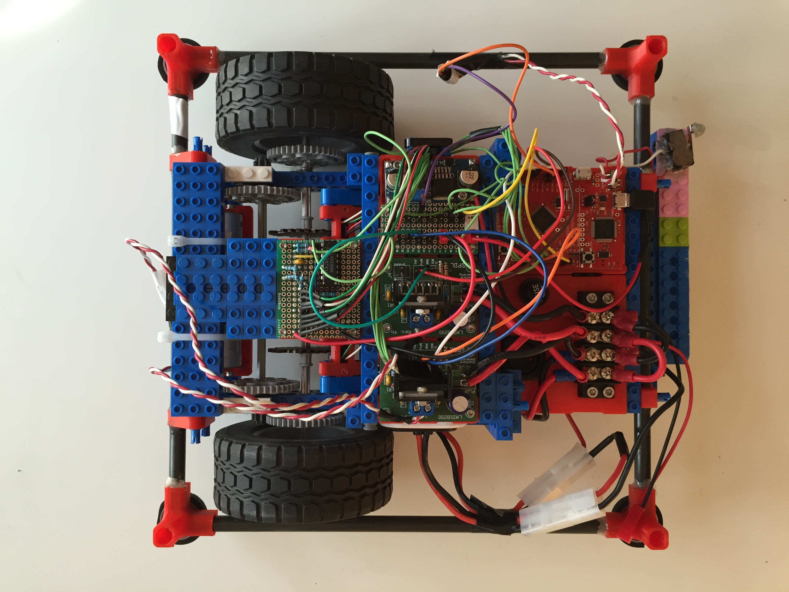
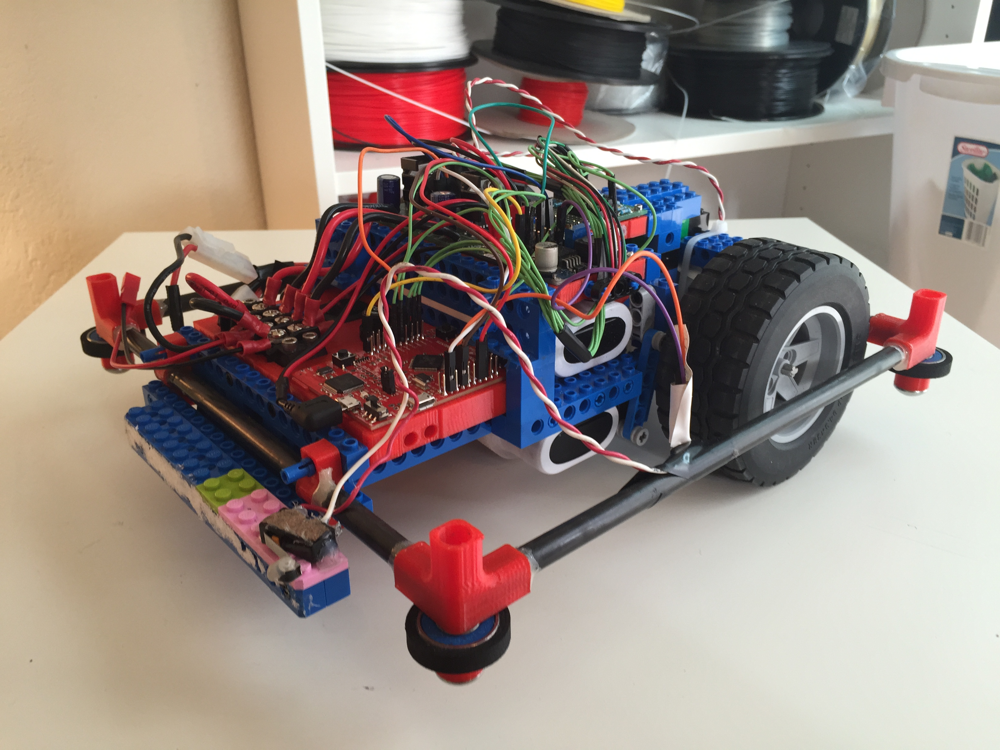
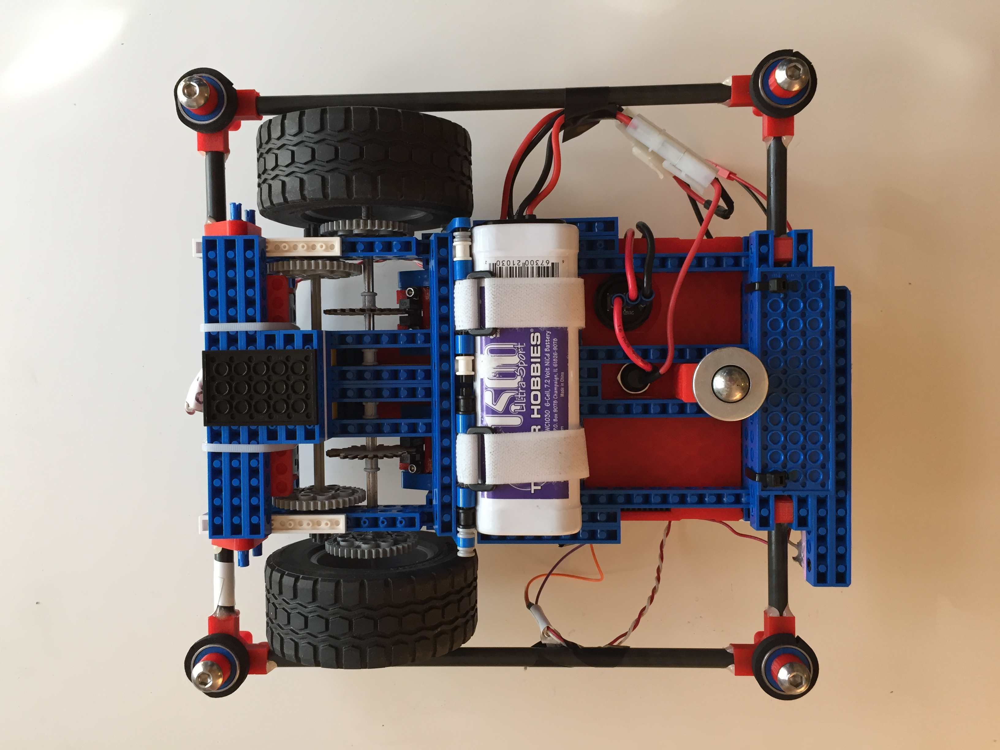
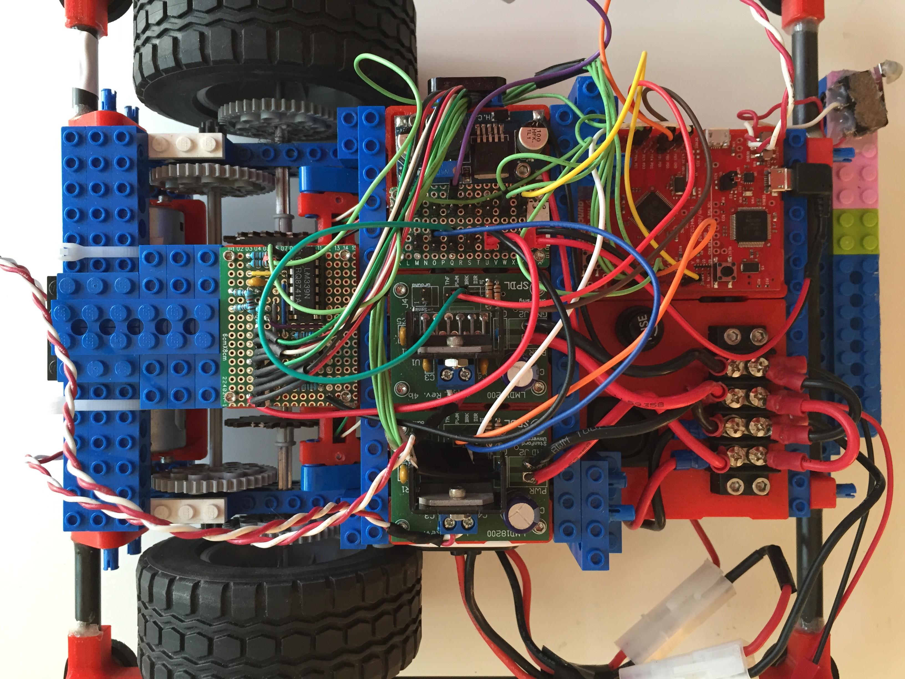
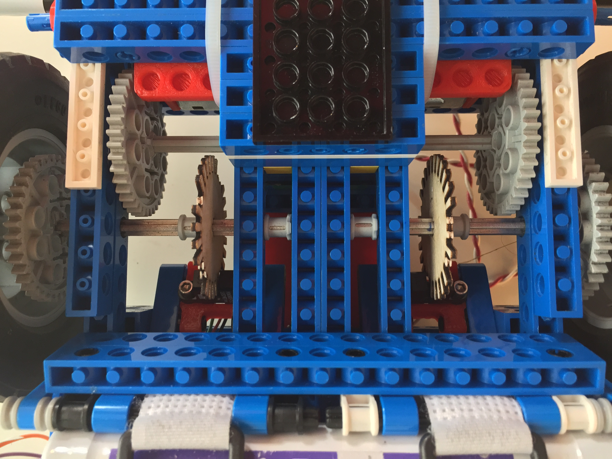
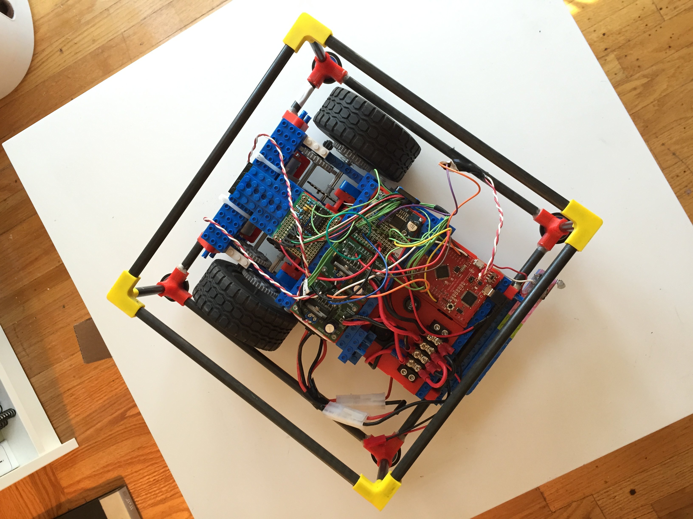

Lego Go-Kart
Autonomous racingbot for ME 218B
For ME 218B our task was to design an autonomous racingbot which would race four laps around a course, shoot a foam ball into a bucket and traverse a see-saw obstacle. My group of John Schoech, Kyle Moy, Alex Lin and I decided to use a combination of Legos and 3D printed parts instead of lasercut particle board in order to have the lightest robot possible. Not only did this design decision make our bot the fastest, using Legos allowed us to iterate on our design much more frequently and quickly. Our original plan was to use the computer vision based GPS system implemented on the course but because the system was so unreliable we ended up going with a simple bump sensor to navigate the course Roomba style. Completed winter of 2015.





